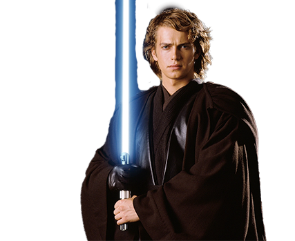

anakin skywalker
Anakin Skywalker foi um lendário Cavaleiro Jedi que serviu a República Galáctica durante seus últimos anos, e mais tarde se tornou Darth Vader, um Lorde Negro dos Sith. Ele era o filho de Shmi Skywalker, e mais tarde se casou secretamente com a Senadora Padmé Amidala de Naboo, tornando-se pai dos lendários Jedi Luke Skywalker e Leia Organa Solo.
- 